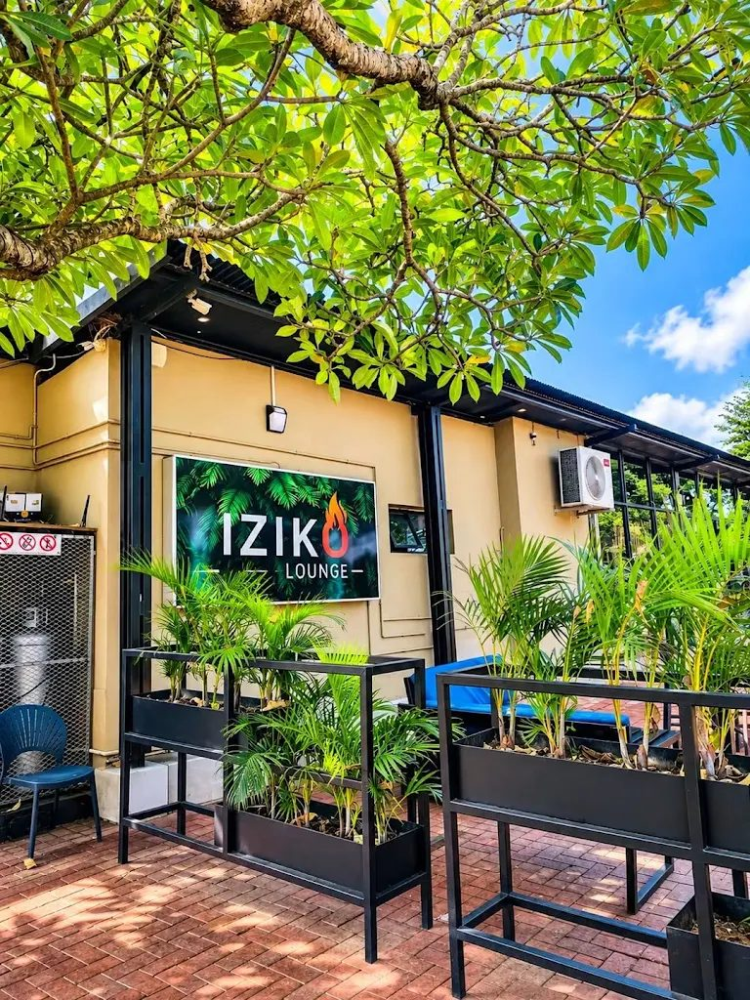
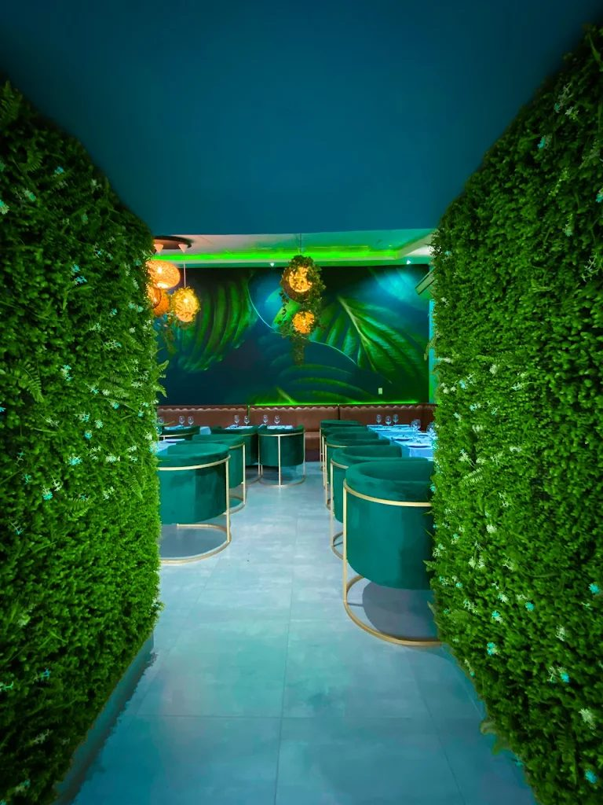
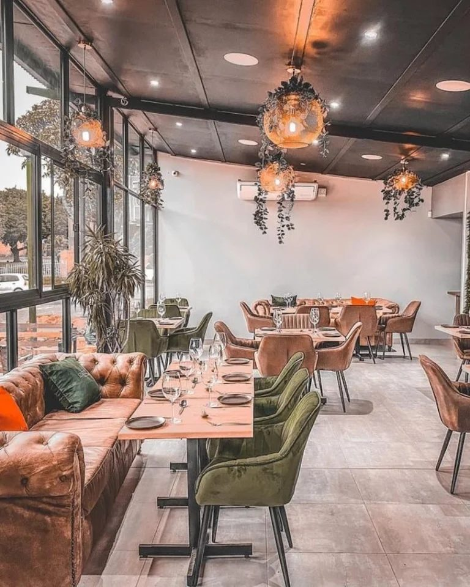
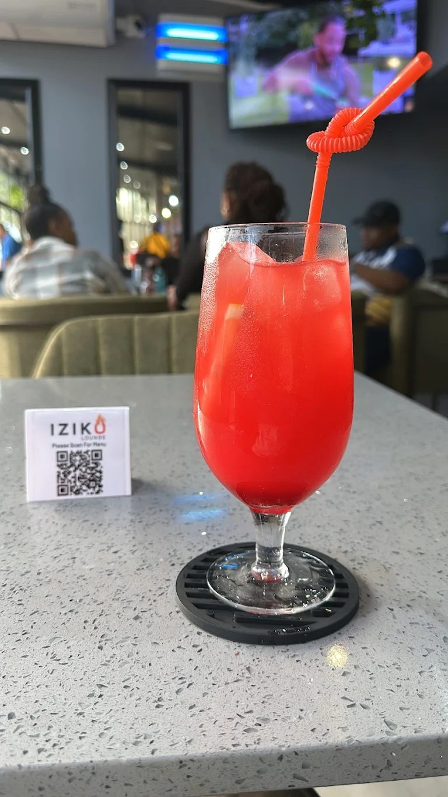
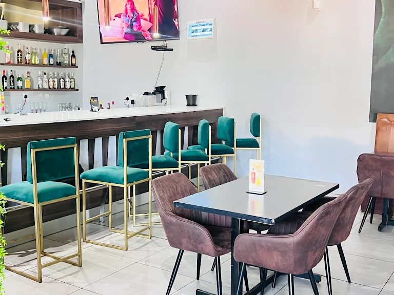
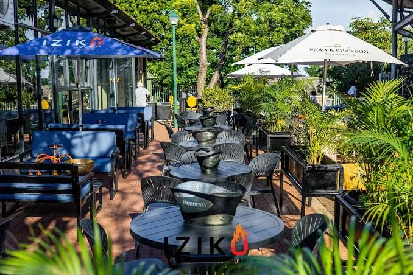
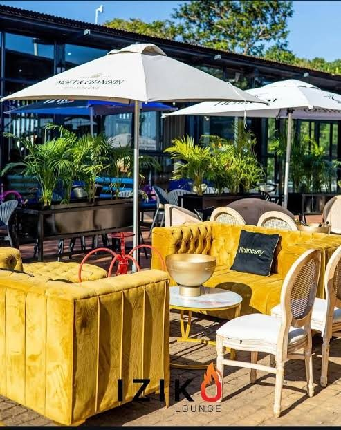
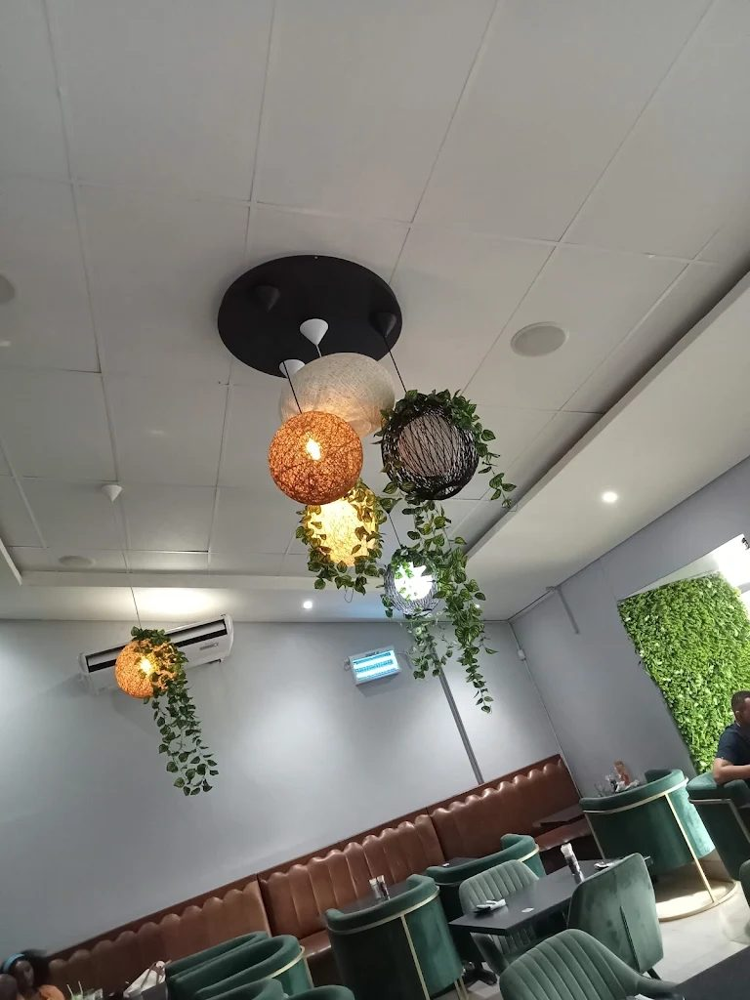
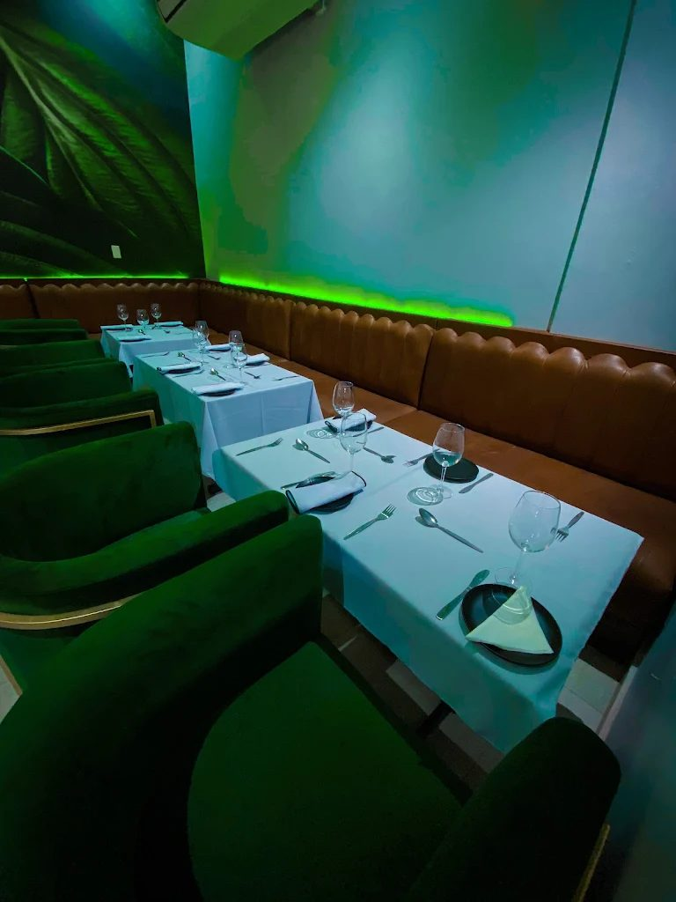

Iziko is Empangeni’s premium lifestyle lounge: crafted cocktails, flame-grilled plates and a jungle-green room made for long nights.

Iziko means “hearth”. At 42 Turnbull Street you’ll find a leafy patio under the trees, a velvet-and-leather dining room, a full cocktail bar and a kitchen that grills, fries and fires up hearty plates from breakfast to late.
Emerald velvet, tan leather, woven lanterns and a patio shaded by old trees.







Iziko is built and run by a youth-owned team who wanted Empangeni to have a lounge of its own.
The premium lifestyle establishment Iziko Lounge in Empangeni Central is a youth-owned business. Public grand opening materials and local guest reviews associate the management and ownership with Lucky Mbhense, alongside prominent operational figures and partners including Sam Mthembu and Njabulo Khumalo.
Every 14 February, 12:00 to 20:00, Iziko serves a three-part menu for two. Reserve early.
Address
42 Turnbull St, Empangeni Central, Empangeni, 3880
Phone
065 558 6891
Average spend
R200 to R600 per person
Services
Dine-in, order collection, delivery
